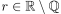
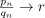
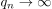
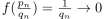
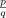
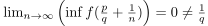

Stetigkeit der Thomaeschen Funktion
1. Satz
Die Thomaesche Funktion ist auf allen rationalen Punkten unstetig, und auf allen irrationalen punkten stetig
2. Beweisskizze
2.1. stetigkeit
Sei . Dann existiert eine Approximation  und sei o.B.d.A. die Folgenglieder jeweils vollständig gekürzt Es folgt dann  und damit auch 
2.2. unstetig
Sei  fest, dann gilt insbesondere . sei $ + → $ eine Folge es gilt für 